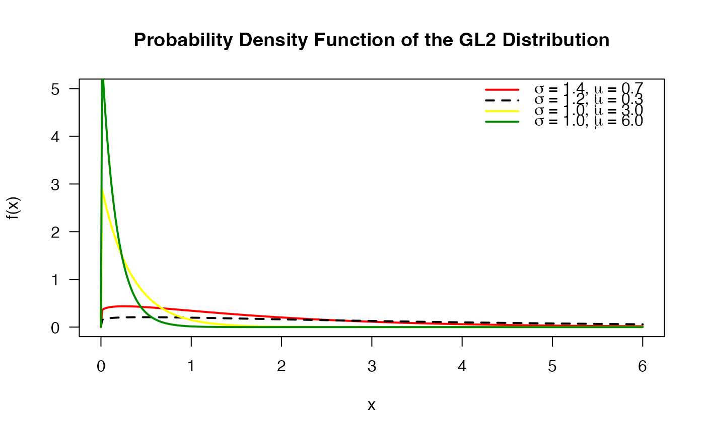
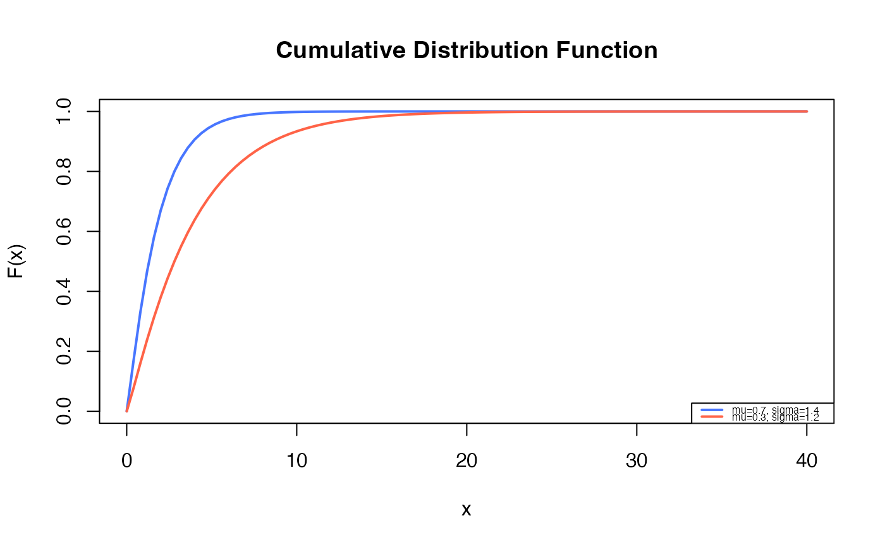
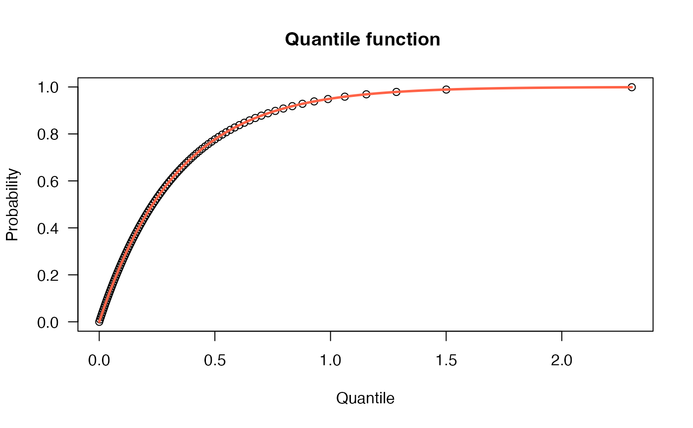
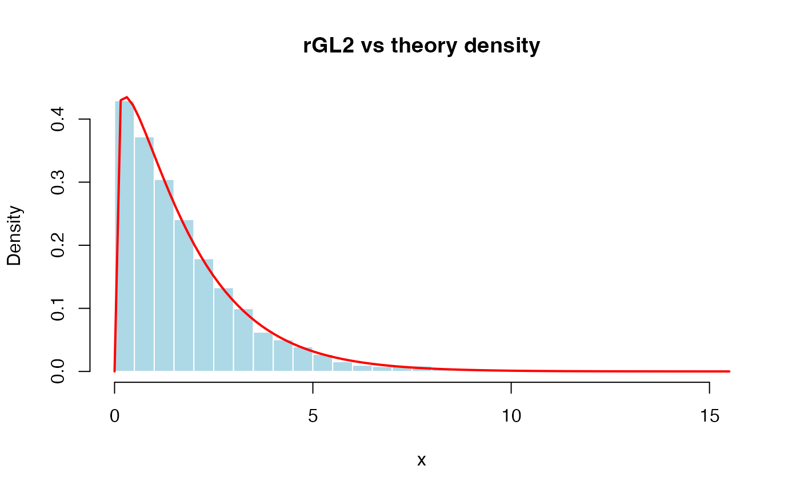
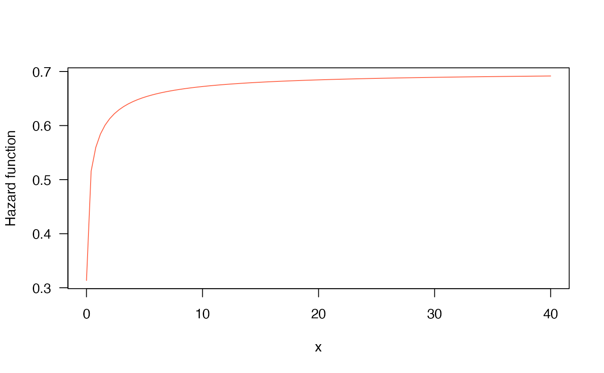

These functions define the density, distribution function, quantile function and random generation for the Generalized Lindley Type II, GL2(), distribution with parameters \(\mu\) and \(\sigma\).
Usage
dGL2(x, mu, sigma, log = FALSE)
pGL2(q, mu, sigma, lower.tail = TRUE, log.p = FALSE)
qGL2(p, mu, sigma, lower.tail = TRUE, log.p = FALSE)
rGL2(n, mu, sigma)
hGL2(x, mu = 0.5, sigma = 0.5)Arguments
- x, q
vector of positive quantiles.
- mu
vector of the mu parameter.
- sigma
vector of the sigma parameter.
- log, log.p
logical; if TRUE, probabilities p are given as log(p).
- lower.tail
logical; if TRUE (default), probabilities are \(P[X \le x]\), otherwise, \(P[X > x]\).
- p
vector of probabilities.
- n
number of random values to return.
Value
dGL2 gives the density, pGL2 gives the distribution
function, qGL2 gives the quantile function, and
rGL2 generates random deviates.
Details
The Generalized Lindley Type II distribution with parameters \(\mu > 0\) and \(\sigma > 0\) has support \(x > 0\) and probability density function given by
\( f(x|\mu,\sigma)= \frac{\mu^2}{\mu+1} \left( 1+ \frac{\mu^{\sigma-2}x^{\sigma-1}} {\Gamma(\sigma)} \right) e^{-\mu x}, \)
for \(x > 0\), \(\mu > 0\) and \(\sigma > 0\).
Note: in this implementation we changed the original parameters \(\theta\) for \(\mu\) and \(\alpha\) for \(\sigma\). This reparameterization was performed to implement the distribution within the GAMLSS framework.
The GL2 distribution is a flexible two-parameter extension of the classical Lindley distribution and is suitable for modeling positive lifetime and survival data.
References
Ekhosuehi, N., Opone, F., & Odobaire, F. (2018). A New Generalized Two Parameter Lindley Distribution. Journal of the Nigerian Statistical Association, 30, 547–566.
See also
GL2.
Author
Sofia Cadavid Rueda, socadavidr@unal.edu.co
Examples
# Example 1
# Plotting the mass function for different parameter values
x_vals <- seq(0, 6, length.out = 500)
# Calculate densities
d1 <- dGL2(x_vals, mu = 0.7, sigma = 1.4)
d2 <- dGL2(x_vals, mu = 0.3, sigma = 1.2)
d3 <- dGL2(x_vals, mu = 3.0, sigma = 1.0)
d4 <- dGL2(x_vals, mu = 6.0, sigma = 1.0)
# Plot
plot(x_vals, d1, type = "l", col = "red", lwd = 2, lty = 1,
ylim = c(0, 5), xlim = c(0, 6),
xlab = "x", ylab = "f(x)",
main = "Probability Density Function of the GL2 Distribution",
las = 1)
lines(x_vals, d2, col = "black", lwd = 2, lty = 2)
lines(x_vals, d3, col = "yellow", lwd = 2, lty = 1)
lines(x_vals, d4, col = "green4", lwd = 2, lty = 1)
# Legend
legend("topright",
col = c("red", "black", "yellow", "green4"),
lwd = 2,
lty = c(1, 2, 1, 1),
legend = c(expression(paste(sigma, " = 1.4, ", mu, " = 0.7")),
expression(paste(sigma, " = 1.2, ", mu, " = 0.3")),
expression(paste(sigma, " = 1.0, ", mu, " = 3.0")),
expression(paste(sigma, " = 1.0, ", mu, " = 6.0"))),
bty = "n")

# Example 2
# Checking if the cumulative curves converge to 1
curve(pGL2(x, mu=0.7, sigma=1.4),
from=0.00001, to=40,
ylim=c(0, 1),
col="royalblue1", lwd=2,
main="Cumulative Distribution Function",
xlab="x", ylab="F(x)")
curve(pGL2(x, mu=0.3, sigma=1.2),
col="tomato",
lwd=2,
add=TRUE)
legend("bottomright", legend=c("mu=0.7, sigma=1.4",
"mu=0.3, sigma=1.2"),
col=c("royalblue1", "tomato", "seagreen"), lwd=2, cex=0.5)

# Example 3
# The quantile function
p <- seq(from=0, to=0.999, length.out=100)
plot(x=qGL2(p, mu=3, sigma=1), y=p, xlab="Quantile",
las=1, ylab="Probability", main="Quantile function ")
curve(pGL2(x, mu=3, sigma=1),
from=0, add=TRUE, col="tomato", lwd=2.5)

# Example 4
# The random function
set.seed(123)
x <- rGL2(5000, mu=0.7, sigma=1.4)
hist(x, breaks=50, freq=FALSE,
main="rGL2 vs theory density",
xlab="x", col="lightblue", border="white")
curve(dGL2(x, mu=0.7, sigma=1.4),
add=TRUE, col="red", lwd=2)

# Example 5
# The Hazard function
curve(hGL2(x, mu=0.7, sigma=1.4), from=0.001, to=40,
col="tomato", ylab="Hazard function", las=1)
